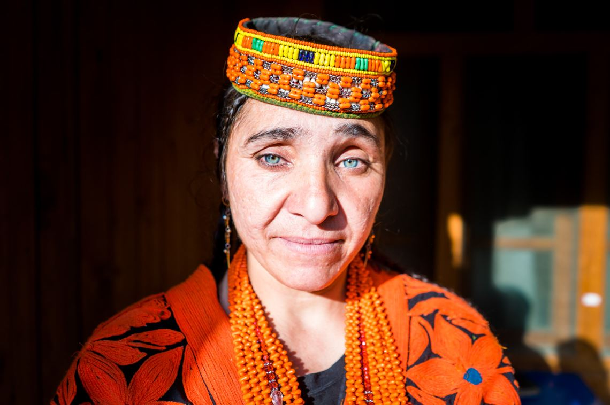

The Kalash Valleys are home to the famous Kalash people, a unique people said to be descendants of the armies of Alexander the Great (although debates rave on the validity of this claim). Cut off from the world and saved from Muslim invaders by their location in three remote mountain valleys, the Kalash are a cultural world apart from the predominantly Muslim population of Pakistan. The colorful Kalash are animists, not Muslims, make their own wine, and have a plethora of other unique traditions and festivals.
Before you go to the Kalash Valley, you must decide which of the three valleys you want to visit:
Bumburet – The most developed Kalash Valley in terms of facilities, and most popular with domestic tourists.
Rumboor – Small villages in Rumboor are less developed, and more popular with foreign tourists. Unlike Bumburet, Rumboor is still predominantly Kalash.
Birir – The least developed Kalash Valley, and sees the least visitors.
We suggest you visit either Rumboor or Birir, as Bumburet has undergone a Disneyfication process, and is less Kalash and more Murree Hills at this point. The percentage of the population that is Kalasha is also much lower in Bumborit.